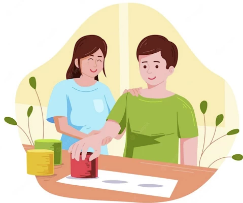
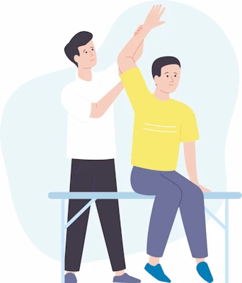

我们倾听并尊重需要
每个康复计划都围绕个人目标、医疗建议、工作要求和现实生活环境制定。
我们重视清晰推理、透明沟通和具成本效益的决策，帮助客户恢复功能、重建信心，并尽早回到独立生活、社区参与和工作。
每个康复计划都围绕个人目标、医疗建议、工作要求和现实生活环境制定。
与客户、治疗团队、雇主、保险机构和家属保持一致，让下一步行动清楚可执行。
评估、建议和报告都以事实为基础，帮助各方更快理解风险、能力和恢复路径。
通过初步评估、功能能力评估、工作场所评估或日常生活能力评估，明确当前能力与限制。
与治疗团队和相关方协作，建立安全、可衡量、可调整的康复和重返工作目标。
持续监测进展，处理障碍，更新建议，支持长期、稳定的功能和工作参与。


您可以发送一般咨询，也可以直接填写转介表。现在的表单是静态模拟版，之后可以接入邮件、CRM 或安全后台。